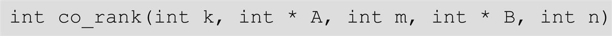
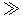
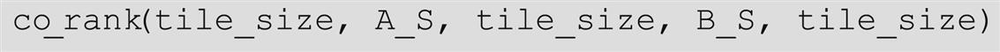
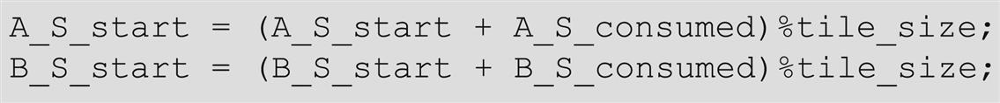
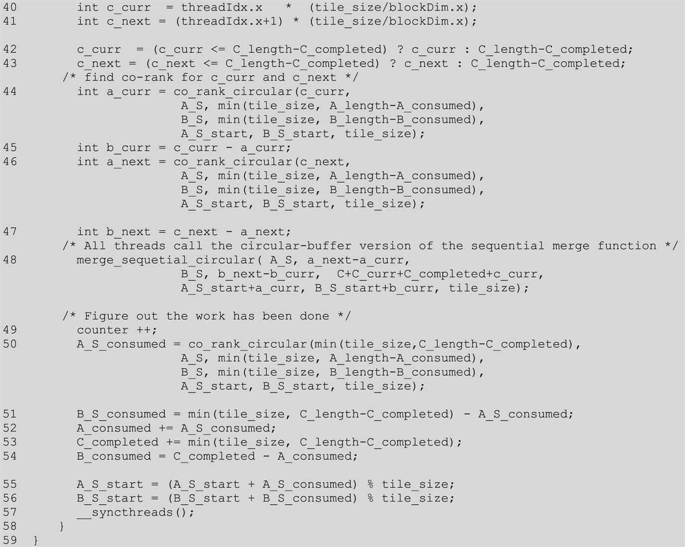
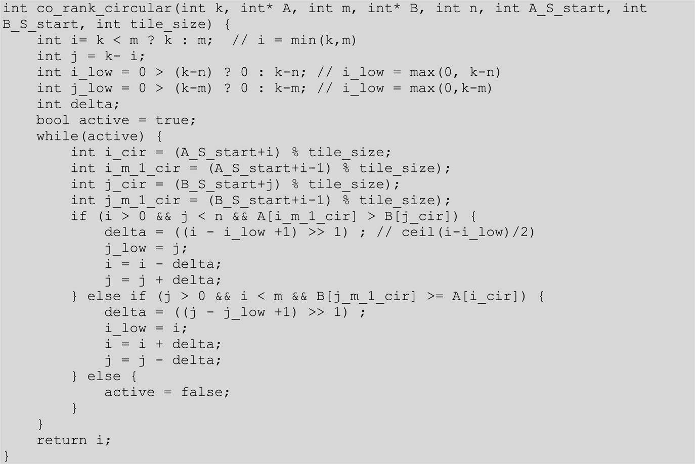
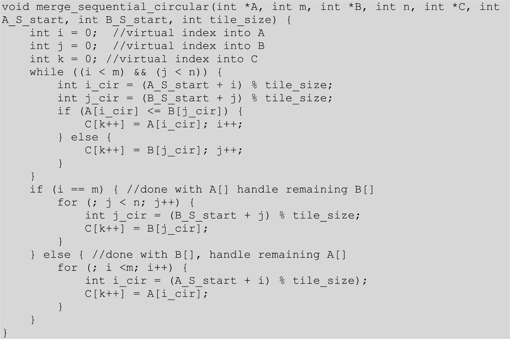

With special contributions from Li-Wen Chang and Jie Lv
This chapter introduces the ordered merge pattern whose parallelization requires each thread to dynamically identify its input position ranges. Because the input ranges are data dependent, we resort to a fast search implementation of the co-rank function to identify the input range for each thread. The fact that the input ranges are data dependent also creates extra challenges when we use tiling technique to conserve memory bandwidth and enable memory coalescing. As a result, we introduce the use of circular buffers to allow us to make full use of the data loaded from global memory. We have shown that introducing a more complex data structure such as a circular buffer can significantly increase the complexity of the code that uses the data structure. Thus we introduce a simplified buffer access model for the code that manipulates and uses the indices to remain largely unchanged. The actual circular nature of the buffers is exposed only when these indices are used to access the elements in the buffer.
Ordered list; map-reduce; merge; dynamic input data identification; rank; co-rank; tiling; buffering; coalescing; circular buffer; binary search
Our next parallel pattern is an ordered merge operation, which takes two sorted lists and generates a combined sorted list. Ordered merge operations can be used as a building block of sorting algorithms, as we will see in Chapter 13, Sorting. Ordered merge operations also form the basis of modern map-reduce frameworks. This chapter presents a parallel ordered merge algorithm in which the input data for each thread is dynamically determined. The dynamic nature of the data access makes it challenging to exploit locality and tiling techniques for improved memory access efficiency and performance. The principles behind dynamic input data identification are also relevant to many other important computations, such as set intersection and set union. We present increasingly sophisticated buffer management schemes for achieving increasing levels of memory access efficiency for order merged and other operations that determine their input data dynamically.
An ordered merge function takes two sorted lists A and B and merges them into a single sorted list C. For this chapter we assume that the sorted lists are stored in arrays. We further assume that each element in such an array has a key. An order relation denoted by ≤ is defined on the keys. For example, the keys may be simply integer values, and ≤ may be defined as the conventional less than or equal to relation between these integer values. In the simplest case, the elements consist of just keys.
Suppose that we have two elements e1 and e2 whose keys are k1 and k2, respectively. In a sorted list based on the relation ≤, if e1 appears before e2, then k1 ≤ k2. A merge function based on an ordering relation R takes two sorted input arrays A and B having m and n elements, respectively, where m and n do not have be to equal. Both array A and array B are sorted on the basis of the ordering relation R. The function produces an output sorted array C having m + n elements. Array C consists of all the input elements from arrays A and B and is sorted by the ordering relation R.
Fig. 12.1 shows the operation of a simple merge function based on the conventional numerical ordering relation. Array A has five elements (m=5), and array B has four elements (n=4). The merge function generates array C with all its 9 elements (m + n) from A and B. These elements must be sorted. The arrows in Fig. 12.1 show how elements of A and B should be placed into C to complete the merge operation. Whenever the numerical values are equal between an element of A and an element of B, the element of A should appear first in the output list C. This requirement ensures the stability of the ordered merge operation.
In general, an ordering operation is stable if elements with equal key values are placed in the same order in the output as the order in which they appear in the input. The example in Fig. 12.1 demonstrates stability both with and across the input lists of the merge operation. For example, the two elements whose values are 10 are copied from B into C while maintaining their original order. This illustrates stability within an input list of the merge operation. For another example the A element whose value is 7 goes into C before the B element of the same value. This illustrates stability across input lists of the merge operation. The stability property allows the ordering operation to preserve previous orderings that are not captured by the key that is used in the current ordering operation. For example, the lists A and B might have been previously sorted according to a different key before being sorted by the current key to be used for merging. Maintaining stability in the merge operation allows the merge operation to preserve the work that was done in the previous steps.
The merge operation is the core of merge sort, an important parallelizable sort algorithm. As we will see in Chapter 13, Sorting, a parallel merge sort function divides the input list into multiple sections and distributes them to parallel threads. The threads sort the individual section(s) and then cooperatively merge the sorted sections. Such a divide-and-concur approach allows efficient parallelization of sorting.
In modern map-reduce distributed computing frameworks, such as Hadoop, the computation is distributed to a massive number of compute nodes. The reduce process assembles the result of these compute nodes into the final result. Many applications require that the results be sorted according to an ordering relation. These results are typically assembled by using the merge operation in a reduction tree pattern. As a result, efficient merge operations are critical to the efficiency of these frameworks.
The merge operation can be implemented with a straightforward sequential algorithm. Fig. 12.2 shows a sequential merge function.
The sequential function in Fig. 12.2 consists of two main parts. The first part consists of a while-loop (line 05) that visits the A and B list elements in order. The loop starts with the first elements: A[0] and B[0]. Every iteration fills one position in the output array C; either one element of A or one element of B will be selected for the position (lines 06–10). The loop uses i and j to identify the A and B elements that are currently under consideration; i and j are both 0 when the execution first enters the loop. The loop further uses k to identify the current position to be filled in the output list array C. In each iteration, if element A[i] is less than or equal to B[j], the value of A[i] is assigned to C[k]. In this case, the execution increments both i and k before going to the next iteration. Otherwise, the value of B[j] is assigned to C[k]. In this case, the execution increments both j and k before going to the next iteration.
The execution exits the while-loop when it reaches either the end of array A or the end of array B. The execution moves on to the second part, which is on the right Fig. 12.2. If array A is the one that has been completely visited, as indicated by the fact that i is equal to m, then the code copies the remaining elements of array B to the remaining positions of array C (lines 13–15). Otherwise, array B is the one that was completely visited, so the code copies the remaining elements of A to the remaining positions of C (lines 17–19). Note that the if-else construct is unnecessary for correctness. We can simply have the two while-loops (lines 13–15 and 17–19) follow the first while-loop. Only one of the two while-loops will be entered, depending on whether A or B was exhausted by the first while-loop. However, we include the if-else construct to make the code more intuitive for the reader.
We can illustrate the operation of the sequential merge function using the simple example from Fig. 12.1. During the first three (0–2) iterations of the while-loop, A[0], A[1], and B[0] are assigned to C[0], C[1], and C[2], respectively. The execution continues until the end of iteration 5. At this point, list A is completely visited, and the execution exits the while loop. A total of six C positions have been filled by A[0] through A[4] and B[0]. The loop in the true branch of the if-construct is used to copy the remaining B elements, that is, B[1] through B[3], into the remaining C positions.
The sequential merge function visits every input element from both A and B once and writes into each C position once. Its algorithm complexity is O(m + n), and its execution time is linearly proportional to the total number of elements to be merged.
Siebert and Traff (2012) proposed an approach to parallelizing the merge operation. In their approach, each thread first determines the range of output positions (output range) that it is going to produce and uses that output range as the input to a co-rank function to identify the corresponding input ranges that will be merged to produce the output range. Once the input and output ranges have been determined, each thread can independently access its two input subarrays and one output subarray. Such independence allows each thread to perform the sequential merge function on their subarrays to do the merge in parallel. It should be clear that the key to the proposed parallelization approach is the co-rank function. We will now formulate the co-rank function.
Let A and B be two input arrays with m and n elements, respectively. We assume that both input arrays are sorted according to an ordering relation. The index of each array starts from 0. Let C be the sorted output array that is generated by merging A and B. Obviously, C has m + n elements. We can make the following observation:
Fig. 12.3 shows the two cases of observation 1. In the first case, the C element in question comes from array A. For example, in Fig. 12.3A, C[4] (value 9) receives its values from A[3]. In this case, k=4 and i=3. We can see that the prefix subarray C[0]–C[3] of C[4] (the subarray of four elements that precedes C[4]) is the result of merging the prefix subarray A[0]–A[2] of A[3] (the subarray of three elements that precedes A[3]) and the prefix subarray B[0] of B[1] (the subarray of 4 − 3=1 element that precedes B[1]). The general formula is that subarray C[0]–C[k − 1] (k elements) is the result of merging A[0]–A[i − 1] (i elements) and B[0]–B[k − i − 1] (k − i elements).
In the second case, the C element in question comes from array B. For example, in Fig. 12.3B, C[6] receives its value from B[1]. In this case, k=6 and j=1. The prefix subarray C[0]–C[5] of C[6] (the subarray of six elements that precedes C[6]) is the result of merging the prefix subarray A[0]–A[4] (the subarray of five elements that precedes A[5]) and B[0] (the subarray of 1 element that precedes B[1]). The general formula for this case is that subarray C[0]–C[k − 1] (k elements) is the result of merging A[0]–A[k − j − 1] (k − j elements) and B[0]–B[j − 1] (j elements).
In the first case, we find i and derive j as k − i. In the second case, we find j and derive i as k - j. We can take advantage of the symmetry and summarize the two cases into one observation:
Siebert and Traff (2012) also proved that i and j, which define the prefix subarrays of A and B that are needed to produce the prefix subarray of C of length k, are unique. For an element C[k] the index k is referred to as its rank. The unique indices i and j are referred to as its co-ranks. For example, in Fig. 12.3A, the rank and co-rank of C[4] are 4, 3, and 1. For another example the rank and co-rank of C[6] are 6, 5, and 1.
The concept of co-rank gives us a path to parallelizing the merge function. We can divide the work among threads by dividing the output array into subarrays and assigning the generation of one subarray to each thread. Once the assignment has been done, the rank of output elements to be generated by each thread is known. Each thread then uses the co-rank function to determine the two input subarrays that it needs to merge into its output subarray.
Note that the main difference between the parallelization of the merge function and the parallelization of all our previous patterns is that the range of input data to be used by each thread cannot be determined with a simple index calculation. The range of input elements to be used by each thread depends on the actual input values. This makes the parallelized merge operation an interesting and challenging parallel computation pattern.
We define the co-rank function as a function that takes the rank (k) of an element in an output array C and information about the two input arrays A and B and returns the co-rank value (i) for the corresponding element in the input array A. The co-rank function has the following signature:

where k is the rank of the C element in question, A is a pointer to the input A array, m is the size of the A array, B is a pointer to the input B array, n is the size of the input B array, and the return value is i, the co-rank of k in A.The caller can then derive the j, the co-rank value of k in B, as k − i.
Before we study the implementation details of the co-rank function, it is beneficial to first learn about the ways in which a parallel merge function will use it. Such use of the co-rank function is illustrated in Fig. 12.4, where we use two threads to perform the merge operation. We assume that thread 0 generates C[0]–C[3] and thread 1 generates C[4]–C[8].
Intuitively, each thread calls the co-rank function to derive the beginning positions of the subarrays of A and B that will be merged into the C subarray that is assigned to the thread. For example, thread 1 calls the co-rank function with parameters (4, A, 5, B, 4). The goal of the co-rank function for thread 1 is to identify for its rank value k1=4 the co-rank values i1=3 and j1=1. That is, the subarray starting at C[4] is to be generated by merging the subarrays starting at A[3] and B[1]. Intuitively, we are looking for a total of four elements from A and B that will fill the first four elements of the output array prior to where thread 1 will merge its elements. By visual inspection we see that the choice of i1=3 and j1=1 meets our need. Thread 0 will take A[0]–A[2] and B[0], leaving out A[3] (value 9) and B[1] (value 10), which is where thread 1 will start merging.
If we changed the value of i1 to 2, we need to set the j1 value to 2 so that we can still have a total of four elements prior to thread 1. However, this means that we would include B[1] whose value is 10 in thread 0’s elements. This value is larger than A[2] (value 8) that would be included in thread 1’s elements. Such a change would make the resulting C array not properly sorted. On the other hand, if we changed the value of i1 to 4, we need to set the j1 value to 0 to keep the total number of elements at 4. However, this would mean that we include A[3] (value 9) in thread 0’s elements, which is larger than B[0] (value 7), which would be incorrectly included in thread 1’s elements. These two examples point to a search algorithm can quickly identify the value.
In addition to identifying where its input segments start, thread 1 also needs to identify where they end. For this reason, thread 1 also calls the co-rank function with parameters (9, A, 5, B, 4). From Fig. 12.4 we see that the co-rank function should produce co-rank values i2=5 and j2=4. That is, since C[9] is beyond the last element of the C array, all elements of the A and B arrays should have been exhausted if one were trying to generate a C subarray starting at C[9]. In general, the input subarrays to be used by thread t are defined by the co-rank values for thread t and thread t + 1: A[it]–A[it+1] and B[jt]–B[jt+1].
The co-rank function is essentially a search operation. Since both input arrays are sorted, we can use a binary search or even a higher radix search to achieve a computational complexity of O(log N) for the search. Fig. 12.5 shows a co-rank function based on binary search. The co-rank function uses two pairs of marker variables to delineate the range of A array indices and the range of B array indices being considered for the co-rank values. Variables i and j are the candidate co-rank return values that are being considered in the current binary search iteration. Variables i_low and j_low are the smallest possible co-rank values that could be generated by the function. Line 02 initializes i to its largest possible value. If the k value is greater than m, line 02 initializes i to m, since the co-rank i value cannot be larger than the size of the A array. Otherwise, line 02 initializes i to k, since i cannot be larger than k. The co-rank j value is initialized as k − i (line 03). Throughout the execution the co-rank function maintains this important invariant relation. The sum of the i and j variables is always equal to the value of the input variable k (the rank value).
The initialization of the i_low and j_low variables (lines 4 and 5) requires a little more explanation. These variables allow us to limit the scope of the search and make it faster. Functionally, we could set both values to zero and let the rest of the execution elevate them to more accurate values. This makes sense when the k value is smaller than m and n. However, when k is larger than n, we know that the i value cannot be less than k − n. The reason is that the greatest number of C[k] prefix subarray elements that can come from the B array is n. Therefore a minimum of k − n elements must come from A. Therefore the i value can never be smaller than k − n; we may as well set i_low to k − n. Following the same argument, the j_low value cannot be less than k − m, which is the least number of elements of B that must be used in the merge process and thus the lower bound of the final co-rank j value.
We will use the example in Fig. 12.6 to illustrate the operation of the co-rank function in Fig. 12.5. The example assumes that three threads are used to merge arrays A and B into C. Each thread is responsible for generating an output subarray of three elements. We will first trace through the binary search steps of the co-rank function for thread 1, which is responsible for generating C[3]–C[5]. The reader should be able to determine that thread 1 calls the co-rank function with parameters (3, A, 5, B, 4).
As is shown in Fig. 12.5, line 2 of the co-rank function initializes i to 3, which is the k value, since k is smaller than m (value 5) in this example. Also, i_low is set 0. The i and i_low values define the section of A array that is currently being searched to determine the final co-rank i value. Thus only 0, 1, 2, and 3 are being considered for the co-rank i value. Similarly, the j and j_low values are set to 0 and 0.
The main body of the co-rank function is a while-loop (line 08) that iteratively zooms into the final co-rank i and j values. The goal is to find a pair of i and j values that result in A[i-1]≤B[j] and B[j-1]<A[i]. The intuition is that we choose the i and j values so none of the values in the A subarray used for generating the previous output subarray (referred to as the previous A subarray) should be greater than any elements in the B subarray used for generating the current output subarray (referred to as the current B subarray). Note that the largest A element in the previous subarray could be equal to the smallest element in the current B subarray, since the A elements take precedence in placement into the output array whenever a tie occurs between an A element and a B element because of the stability requirement.
In Fig. 12.5 the first if-construct in the while-loop (line 09) tests whether the current i value is too high. If so, it will adjust the marker values so that it reduces the search range for i by about half toward the smaller end. This is done by reducing the i value by about half the difference between i and i_low. In Fig. 12.7, for iteration 0 of the while-loop, the if-construct finds that the i value (3) is too high, since A[i − 1], whose value is 8, is greater than B[j], whose value is 7. The next few statements proceed to reduce the search range for i by reducing its value by delta=(3 − 0 + 1)

1=2 (lines 10 and 13) while keeping the i_low value unchanged. Therefore the i_low and i values for the next iteration will be 0 and 1.The code also makes the search range for j to be comparable to that of i by shifting it to above the current j location. This adjustment maintains the property that the sum of i and j should be equal to k. The adjustment is done by assigning the current j value to j_low (line 11) and adding the delta value to j (line 12). In our example the j_low and j values for the next iteration will be 0 and 2.
During iteration 1 of the while-loop, illustrated in Fig. 12.7, the i and j values are 1 and 2. The if-construct (line 9) finds the i value to be acceptable since A[i − 1] is A[0] whose value is 1, while B[j] is B[2] whose value is 10, so A[i − 1] is less than B[j]. Thus the condition of the first if-construct fails, and the body of the if-construct is skipped. However, the j value is found to be too high during this iteration, since B[j − 1] is B[1] (line 14), whose value is 10, while A[i] is A[1], whose value is 7. Therefore the second if-construct will adjust the markers for the next iteration so that the search range for j will be reduced by about half toward the lower values. This is done by subtracting delta=(j − j_low + 1) 1=1 from j (lines 15 and 18). As a result, the j_low and j values for the next iteration will be 0 and 1. It also makes the next search range for i the same size as that for j but shifts it up by delta locations. This is done by assigning the current i value to i_low (line 16) and adding the delta value to i (line 17). Therefore the i_low and i values for the next iteration will be 1 and 2, respectively.
During iteration 2, illustrated in Fig. 12.8, the i and j values are 2 and 1. Both if-constructs (lines 9 and 14) will find both i and j values acceptable. For the first if-construct, A[i − 1] is A[1] (value 7) and B[j] is B[1] (value 10), so the condition A[i − 1]≤B[j] is satisfied. For the second if-construct, B[j − 1] is B[0] (value 7) and A[i] is A[2] (value 8), so the condition B[j − 1]<A[i] is also satisfied. The co-rank function sets a flag to exit the while-loop (lines 20 and 08) and returns the final i value 2 as the co-rank i value (line 23). The caller thread can derive the final co-rank j value as k − i=3 − 2=1. An inspection of Fig. 12.8 confirms that co-rank values 2 and 1 indeed identify the correct A and B input subarrays for thread 1.
The reader should repeat the same process for thread 2 as an exercise. Also, note that if the input streams are much longer, the delta values will be reduced by half in each step, so the algorithm is of log2(N) complexity, where N is the maximum of the two input array sizes.
For the rest of this chapter we assume that the input A and B arrays reside in the global memory. We further assume that a kernel is launched to merge the two input arrays to produce an output array C that is also in the global memory. Fig. 12.9 shows a basic kernel that is a straightforward implementation of the parallel merge function described in Section 12.3.
As we can see, the kernel is simple. It first divides the work among threads by calculating the starting point of the output subarray to be produced by the current thread (k_curr) and that of the next thread (k_next). Keep in mind that the total number of output elements may not be a multiple of the number of threads. Each thread then makes two calls to the co-rank function. The first call uses k_curr as the rank parameter, which is the first (lowest-indexed) element of the output subarray that the current thread is to generate. The returned co-rank value, i_curr, gives the lowest-indexed input A array element that belongs to the input subarray to be used by the thread. This co-rank value can also be used to get j_curr for the B input subarray. The i_curr and j_curr values mark the beginning of the input subarrays for the thread. Therefore &A[i_curr] and &B[j_curr] are the pointers to the beginning of the input subarrays to be used by the current thread.
The second call uses k_next as the rank parameter to get the co-rank values for the next thread. These co-rank values mark the positions of the lowest-indexed input array elements to be used by the next thread. Therefore i_next − i_curr and j_next − j_curr give the sizes of the subarrays of A and B to be used by the current thread. The pointer to the beginning of the output subarray to be produced by the current thread is &C[k_curr]. The final step of the kernel is to call the merge_sequential function (from Fig. 12.2) with these parameters.
The execution of the basic merge kernel can be illustrated with the example in Fig. 12.8. The k_curr values for the three threads (threads 0, 1, and 2) will be 0, 3, and 6. We will focus on the execution of thread 1 whose k_curr value will be 3. The i_curr and j_curr values determined from the first co-rank function call are 2 and 1. The k_next value for thread 1 will be 6. The second call to the co-rank function helps determine the i_next and j_next values of 5 and 1. Thread 1 then calls the merge function with parameters (&A[2], 3, &B[1], 0, &C[3]). Note that the 0 value for parameter n indicates that none of the three elements of the output subarray for thread 1 should come from array B. This is indeed the case in Fig. 12.8: output elements C[3]−C[5] all come from A[2]−A[4].
While the basic merge kernel is quite simple and elegant, it falls short in memory access efficiency. First, it is clear that when executing the merge_sequential function, adjacent threads in a warp are not accessing adjacent memory locations when they read and write the input and output subarray elements. For the example in Fig. 12.8, during the first iteration of the merge_sequential function execution, the three adjacent threads would read A[0], A[2], and B[0]. They will then write to C[0], C[3], and C[6]. Thus their memory accesses are not coalesced, resulting in poor utilization of memory bandwidth.
Second, the threads also need to access A and B elements from the global memory when they execute the co-rank function. Since the co-rank function does a binary search, the access patterns are somewhat irregular and will be unlikely to be coalesced. As a result, these accesses can further reduce the efficiency of utilizing the memory bandwidth. It would be helpful if we can avoid these uncoalesced accesses to the global memory by the co-rank function.
In Chapter 6, Performance Considerations, we mentioned three main strategies for improving memory coalescing in kernels: (1) rearranging the mapping of threads to data, (2) rearranging the data itself, and (3) transferring the data between the global memory and the shared memory in a coalesced manner and performing the irregular accesses in the shared memory. For the merge pattern we will use the third strategy, which leverages shared memory to improve coalescing. Using shared memory also has the advantage of capturing the small amount of data reuse across the co-rank functions and the sequential merge phase.
The key observation is that the input A and B subarrays to be used by the adjacent threads are adjacent to each other in memory. Essentially, all threads in a block will collectively use larger, block-level subarrays of A and B to generate a larger, block-level subarray of C. We can call the co-rank function for the entire block to get the starting and ending locations for the block-level A and B subarrays. Using these block-level co-rank values, all threads in the block can cooperatively load the elements of the block-level A and B subarrays into the shared memory in a coalesced pattern.
Fig. 12.10 shows the block-level design of a tiled merge kernel. In this example, we assume that three blocks will be used for the merge operation. At the bottom of the figure, we show that C is partitioned into three block-level subarrays. We delineate these partitions with gray vertical bars. On the basis of the partition, each block calls the co-rank functions to partition the input array into subarrays to be used for each block. We also delineate the input partitions with gray vertical bars. Note that the input partitions can vary significantly in size according to the actual data element values in the input arrays. For example, in Fig. 12.8 the input A subarray is significantly larger than the input B subarray for thread 0. On the other hand, the input A subarray is significantly smaller than the input B subarray for thread 1. Obviously, the combined size of the two input subarrays must always be equal to the size of the output subarray for each thread.
We will declare two shared memory arrays A_S and B_S for each block. Owing to the limited shared memory size, A_S and B_S may not be able to cover the entire input subarrays for the block. Therefore we will take an iterative approach. Assume that the A_S and B_S arrays can each hold x elements, while each output subarray contains y elements. Each thread block will perform its operation in y/x iterations. During each iteration, all threads in a block will cooperatively load x elements from the block’s input A subarray and x elements from its input B subarray.
The first iteration of each thread is illustrated in Fig. 12.10. We show that for each block, a light gray section of the input A subarray is loaded into A_S, and a light gray section of the input B subarray is loaded into B_S. With x A elements and x B elements in the shared memory, the thread block has enough input elements to generate at least x output array elements. All threads are guaranteed to have all the input subarray elements they need for the iteration. One might ask why loading a total of 2x input elements can guarantee the generation of only x output elements. The reason is that in the worst case, all elements of the current output section may all come from one of the input sections. This uncertainty of input usage makes the tiling design for the merge kernel much more challenging than the previous patterns. One can be more accurate in loading the input tiles by first calling the co-rank function for the current and next output sections. In this case, we pay an additional binary search operation to save on redundant data loading. We leave this alternative implementation as an exercise. We will also increase the efficiency of memory bandwidth utilization with a circular buffer design in Section 12.7.
Fig. 12.10 also shows that threads in each block will use a portion of the A_S and a portion of the B_S in each iteration, shown as dark gray sections, to generate a section of x elements in their output C subarray. This process is illustrated with the dotted arrows going from the A_S and B_S dark gray sections to the C dark gray sections. Note that each thread block may well use a different portion of its A_S versus B_S sections. Some blocks may use more elements from A_S, and others may use more from B_S. The actual portions that are used by each block depend on the input data element values.
Fig. 12.11 shows the first part of a tiled merge kernel. A comparison against Fig. 12.9 shows remarkable similarity. This part is essentially the block-level version of the setup code for the thread-level basic merge kernel. Only one thread in the block needs to calculate the co-rank values for the rank values of the beginning output index of the current block and that of the beginning output index of the next block. The values are placed into the shared memory so that they can be visible to all threads in the block. Having only one thread to call the co-rank functions reduces the number of global memory accesses by the co-rank functions and should improve the efficiency of the global memory accesses. A barrier synchronization is used to ensure that all threads wait until the block-level co-rank values are available in the shared memory A_S[0] and A_S[1] locations before they proceed to use the values.
Recall that since the input subarrays may be too large to fit into the shared memory, the kernel takes an iterative approach. The kernel receives a tile_size argument that specifies the number of A elements and B elements to be accommodated in the shared memory. For example, a tile_size value of 1024 means that 1024 A array elements and 1024 B array elements are to be accommodated in the shared memory. This means that each block will dedicate (1024 + 1024)×4=8192 bytes of shared memory to hold the A and B array elements.
As a simple example, assume that we would like to merge an A array of 33,000 elements (m=33,000) with a B array of 31,000 elements (n=31,000). The total number of output C elements is 64,000. Further assume that we will use 16 blocks (gridDim.x=16) and 128 threads in each block (blockDim.x=128). Each block will generate 64,000/16=4000 output C array elements.
If we assume that the tile_size value is 1024, the while-loop in Fig. 12.12 will need to take four iterations for each block to complete the generation of its 4000 output elements. During iteration 0 of the while-loop, the threads in each block will cooperatively load 1024 elements of A and 1024 elements of B into the shared memory. Since there are 128 threads in a block, they can collectively load 128 elements in each iteration of the for-loop (line 26). So the first for-loop in Fig. 12.12 will iterate 8 times for all threads in a block to complete the loading of the 1024 A elements. The second for-loop will also iterate 8 times to complete the loading the 1024 B elements. Note that threads use their threadIdx.x values to select the element to load, so consecutive threads load consecutive elements. The memory accesses are coalesced. We will come back later and explain the if-conditions and how the index expressions for loading the A and B elements are formulated.
Once the input tiles are in the shared memory, individual threads can divide up the input tiles and merge their portions in parallel. This is done by assigning a section of the output to each thread and running the co-rank function to determine the sections of shared memory data that should be used for generating that output section. The code in Fig. 12.13 completes this step. Keep in mind that this is a continuation of the while-loop that started in Fig. 12.12. During each iteration of the while-loop, threads in a block will generate a total of tile_size C elements, using the data that we loaded into shared memory. (The exception is the last iteration, which will be addressed later.) The co-rank function is run on the data in shared memory for individual threads. Each thread first calculates the starting position of its output range and that of the next thread and then uses these starting positions as the inputs to the co-rank function to identify its input ranges. Each thread will then call the sequential merge function to merge its portions of A and B elements (identified by the co-rank values) from the shared memory into its designated range of C elements.
Let us resume our running example. In each iteration of the while-loop, all threads in a block will be collectively generating 1024 output elements, using the two input tiles of A and B elements in the shared memory. (Once again, we will deal with the last iteration of the while-loop later.) The work is divided among 128 threads, so each thread will be generating eight output elements. While we know that each thread will consume a total of eight input elements in the shared memory, we need to call the co-rank function to find out the exact number of A elements versus B elements that each thread will consume and their start and end locations. For example, one thread may use three A elements and five B elements, while another may use six A elements and two B elements, and so on.
Collectively, the total number of A elements and B elements that are used by all threads in a block for the iteration will add up to 1024 in our example. For example, if all threads in a block use 476 A elements, we know that they also used 1024 − 476=548 B elements. It may even be possible that all threads end up using 1024 A elements and 0 B elements. Keep in mind that a total of 2048 elements are loaded in the shared memory. Therefore in each iteration of the while-loop, only half of the A and B elements that were loaded into the shared memory will be used by all the threads in the block.
We are now ready to examine more details of the kernel function. Recall that we skipped the explanation of the index expressions for loading the A and B elements from the global memory into the shared memory. For each iteration of the while-loop, the starting point for loading the current tile in the A and B array depends on the total number of A and B elements that have been consumed by all threads of the block during the previous iterations of the while-loop. Assume that we keep track of the total number of A elements that were consumed by all the previous iterations of the while-loop in variable A_consumed. We initialize A_consumed to 0 before entering the while-loop. During iteration 0 of the while-loop, all blocks start their tiles from A[A_curr] since A_consumed is 0 at the beginning of iteration 0. During each subsequent iteration of the while-loop, the tile of A elements will start at A[A_curr + A_consumed].
Fig. 12.14 illustrates the index calculation for iteration 1 of the while-loop. In our running example in Fig. 12.10 we show the A_S elements that are consumed by the block of threads during iteration 0 as the dark gray portion of the tile in A_S. During iteration 1 the tile to be loaded from the global memory for block 0 should start at the location right after the section that contains the A elements consumed in iteration 0. In Fig. 12.14, for each block, the section of A elements that is consumed in iteration 0 is shown as the small white section at the beginning of the A subarray (marked by the vertical bars) assigned to the block. Since the length of the small section is given by the value of A_consumed, the tile to be loaded for iteration 1 of the while-loop starts at A[A_curr + A_consumed]. Similarly, the tile to be loaded for iteration 1 of the while-loop starts at B[B_curr + B_consumed].
Note that in Fig. 12.13, A_consumed (line 48) and C_completed are accumulated through the while-loop iterations. Also, B_consumed is derived from the accumulated A_consumed and C_completed values, so it is also accumulated through the while-loop iterations. Therefore they always reflect the number of A and B elements that are consumed by all the iterations so far. At the beginning of each iteration the tiles to be loaded for the iteration always start with A[A_curr + A_consumed] and B[B_curr + B_consumed].
During the last iterations of the while-loop, there may not be enough input A or B elements to fill the input tiles in the shared memory for some of the thread blocks. For example, in Fig. 12.14, for thread block 2, the number of remaining A elements for iteration 1 is less than the tile size. An if-statement should be used to prevent the threads from attempting to load elements that are outside the input subarrays for the block. The first if-statement in Fig. 12.12 (line 27) detects such attempts by checking whether the index of the A_S element that a thread is trying to load exceeds the number of remaining A elements given by the value of the expression A_length − A_consumed. The if-statement ensures that the threads load only the elements that are within the remaining section of the A subarray. The same is done for the B elements (line 32).
With the if-statements and the index expressions, the tile loading process should work well as long as A_consumed and B_consumed give the total number of A and B elements consumed by the thread block in previous iterations of the while-loop. This brings us to the code at the end of the while-loop in Fig. 12.13. These statements update the total number of C elements generated by the while-loop iterations thus far. For all but the last iteration, each iteration generates additional tile_size C elements.
The next two statements update the total number of A and B elements consumed by the threads in the block. For all but the last iteration the number of additional A elements consumed by the thread block is the returned value of

As we mentioned before, the calculation of the number of elements consumed may not be correct at the end of the last iteration of the while-loop. There may not be a full tile of elements left for the final iteration. However, since the while-loop will not iterate any further, the A_consumed, B_consumed, and C_completed values will not be used so the incorrect results will not cause any harm. However, one should remember that if for any reason these values are needed after exiting the while-loop, the three variables will not have the correct values. The values of A_length, B_length, and C_length should be used instead, since all the elements in the designated subarrays to the thread block will have been consumed at the exit of the while-loop.
The tiled kernel achieves substantial reduction in global memory accesses by the co-rank function and makes the global memory accesses coalesce. However, as is, the kernel has a significant deficiency. It makes use of only half of the data that is loaded into the shared memory in each iteration. The unused data in the shared memory is simply reloaded in the next iteration. This wastes half of the memory bandwidth. In the next section we will present a circular buffer scheme for managing the tiles of data elements in the shared memory, which allows the kernel to fully utilize all the A and B elements that have been loaded into the shared memory. As we will see, this increased efficiency comes with a substantial increase in code complexity.
The design of the circular buffer merge kernel, which will be referred to as merge_circular_buffer_kernel, is largely the same as that of the merge_tiled_kernel kernel in the previous section. The main difference lies in the management of the A and B elements in the shared memory to enable full utilization of all the elements loaded from the global memory. The overall structure of the merge_tiled_kernel is shown in Figs. 12.12 through 12.14; it assumes that the tiles of the A and B elements always start at A_S[0] and B_S[0], respectively. After each while-loop iteration the kernel loads the next tile, starting from A_S[0] and B_S[0]. The inefficiency of the merge_tiled_kernel comes from the fact that part of the next tiles of elements are in the shared memory, but we reload the entire tile from the global memory and write over these remaining elements from the previous iteration.
Fig. 12.15 shows the main idea of merge_circular_buffer_kernel. We will continue to use the example from Figs. 12.10 and 12.14. Two additional variables, A_S_start and B_S_start, are added to allow each iteration of the while-loop in Fig. 12.12 to start its A and B tiles at dynamically determined positions inside A_S[0] and B_S[0], respectively. This added tracking allows each iteration of the while-loop to start the tiles with the remaining A and B elements from the previous iteration. Since there is no previous iteration when we first enter the while-loop, these two variables are initialized to 0 before entering the while-loop.
During iteration 0, since the values of A_S_start and B_S_start are both 0, the tiles will start with A_S[0] and B_S[0]. This is illustrated in Fig. 12.15A, where we show the tiles that will be loaded from the global memory (A and B) into the shared memory (A_S and B_S) as light gray sections. Once these tiles have been loaded into the shared memory, merge_circular_buffer_kernel will proceed with the merge operation in the same way as the merge_tile_kernel.
We also need to update the A_S_start and B_S_start variables for use in the next iteration by advancing the value of these variables by the number of A and B elements consumed from the shared memory during the current iteration. Keep in mind that the size of each buffer is limited to tile_size. At some point, we will need to reuse the buffer locations at the beginning part of the A_S and B_S arrays. This is done by checking whether the new A_S_start and B_S_start values exceed the tile_size. If so, we subtract tile_size from them as shown in the following if-statement:

Fig. 12.15B illustrates the update of the A_S_start and B_S_start variables. At the end of iteration 0 a portion of the A tile and a portion of the B tile have been consumed. The consumed portions are shown as white sections in A_S and B_S in Fig. 12.15B. We update the A_S_start and B_S_start values to the position immediately after the consumed sections in the shared memory.
Fig. 12.15C illustrates the operations for filling the A and B tiles at the beginning of iteration 1 of the while-loop. A_S_consumed is a variable that is added to track the number of A elements used in the current iteration. The variable is useful for filling the tile in the next iteration. At the beginning of each iteration we need to load a section of up to A_S_consumed elements to fill up the A tile in the shared memory. Similarly, we need to load a section of up to B_S_consumed elements to fill up the B tile in the shared memory. The two sections that are loaded are shown as dark gray sections in Fig. 12.15C. Note that the tiles effectively “wrap around” in the A_S and B_S arrays, since we are reusing the space of the A and B elements that were consumed during iteration 0.
Fig. 12.15D illustrates the updates to A_S_start and B_S_start at the end of iteration 1. The sections of elements that were consumed during iteration 1 are shown as the white sections. Note that in A_S, the consumed section wraps around to the beginning part of A_S. The value of the A_S_start variable is also wrapped around by the % modulo operator. It should be clear that we will need to adjust the code for loading and using the tiled elements to support this circular usage of the A_S and B_S arrays.
Part 1 of merge_circular_buffer_kernel is identical to that of merge_tiled_kernel in Fig. 12.11, so we will not present it. Fig. 12.16 shows part 2 of the circular buffer kernel. Refer to Fig. 12.12 for variable declarations that remain the same. New variables A_S_start, B_S_start, A_S_consumed, and B_S_consumed are initialized to 0 before we enter the while-loop.
Note that the exit conditions of the two for-loops have been adjusted. Instead of always loading a full tile, as was the case in the merge kernel in Fig. 12.12, each for-loop in Fig. 12.16 is set up to load only the number of elements that are needed to refill the tiles, given by A_S_consumed. The section of the A elements to be loaded by a thread block in the ith for-loop iteration starts at global memory location A[A_curr + A_consumed + i]. Note that i is incremented by blockDim.x after each iteration. Thus the A element to be loaded by a thread in the ith for-loop iteration is A[A_curr + A_consumed + i + threadIdx.x]. The index for each thread to place its A element into the A_S array is A_S_start + (tile_size − A_S_consumed) + I + threadIdx, since the tile starts at A_S[A_S_start] and there are (tile_size − A_S_consumed) elements remaining in the buffer from the previous iteration of the while-loop. The modulo (%) operation checks whether the index value is greater than or equal to tile_size. If it is, it is wrapped back into the beginning part of the array by subtracting tile_size from the index value. The same analysis applies to the for-loop for loading the B tile and is left as an exercise for the reader.
Using the A_S and B_S arrays as circular buffers also incurs additional complexity in the implementation of the co-rank and merge functions. Part of the additional complexity could be reflected in the thread-level code that calls these functions. However, in general, it is better if one can efficiently handle the complexities inside the library functions to minimize the increased level of complexity in the user code. We show such an approach in Fig. 12.17. Fig. 12.17A shows the implementation of the circular buffer. A_S_start and B_S_start mark the beginning of the tile in the circular buffer. The tiles wrap around in the A_S and B_S arrays, shown as the light gray section to the left of A_S_start and B_S_start.
Keep in mind that the co-rank values are used for threads to identify the starting position, ending position, and length of the input subarrays that they are to use. When we employ circular buffers, we could provide the co-rank values as the actual indices in the circular buffer. However, this would incur quite a bit of complexity in the merge_circular_buffer_kernel code. For example, the a_next value could be smaller than the a_curr value, since the tile is wrapped around in the A_S array. Thus one would need to test for the case and calculate the length of the section as a_next-a_curr + tile_size. However, in other cases when a_next is larger than a_curr, the length of the section is simply a_next − a_curr.
Fig. 12.17B shows a simplified model for defining, deriving, and using the co-rank values with the circular buffer. In this model, each tile appears to be in a continuous section starting at A_S_start and B_S_start. In the case of the B_S tile in Fig. 12.17A, b_next is wrapped around and would be smaller than b_curr in the circular buffer. However, as is shown in Fig. 12.17B, the simplified model provides the illusion that all elements are in a continuous section of up to tile_size elements; thus a_next is always larger than or equal to a_curr, and b_next is always larger than or equal to b_curr. It is up to the implementation of the co_rank_circular and merge_sequential_circular functions to map this simplified view of the co-rank values into the actual circular buffer indices so that they can carry out their functionalities correctly and efficiently.
The co_rank_circular and merge_sequential_circular functions have the same set of parameters as the original co_rank and merge functions plus three additional parameters: A_S_start, B_S_start, and tile_size. These three additional parameters inform the functions where the current starting point of the buffers are and how big the buffers are. Fig. 12.18 shows the revised thread-level code based on the simplified model for the co-rank value using circular buffers. The only change to the code is that the co_rank_circular and merge_sequential_circular functions are called instead of the co_rank and merge functions. This demonstrates that a well-designed library interface can reduce the impact on the user code when employing sophisticated data structures.

Fig. 12.19 shows an implementation of the co-rank function that provides the simplified model for the co-rank values while correctly operating on circular buffers. It treats i, j, i_low, and j_low values in exactly the same way as the co-rank function in Fig. 12.5. The only change is that i, i − 1, j, and j − 1 are no longer used directly as indices in accessing the A_S and B_S arrays. They are used as offsets that are to be added to the values of A_S_start and B_S_start to form the index values i_cir, i_m_1_cir, j_cir, and j_m_1_cir. In each case, we need to test whether the actual index values need to be wrapped around to the beginning part of the buffer. Note that we cannot simply use i_cir − 1 to replace i − 1. We need to form the final index value and check for the need to wrap it around. It should be clear that the simplified model also helps to keep the co-rank function code simple: All the manipulations of the i, j, i_low, and j_low values remain the same; they do not need to deal with the circular nature of the buffers.

Fig. 12.20 shows an implementation of the merge_sequential_circular function. Similarly to the co_rank_circular function, the logic of the code remains essentially unchanged from the original merge function. The only change is in the way in which i and j are used to access the A and B elements. Since the merge_sequential_circular function will be called only by the thread-level code of merge_circular_buffer_kernel, the A and B elements that are accessed will be in the A_S and B_S arrays. In all four places where i or j is used to access the A or B elements, we need to form the i_cir or j_cir and test whether the index value needs to be wrapped around to the beginning part of the array. Otherwise, the code is the same as that of the merge function in Fig. 12.2.

Although we did not list all parts of merge_circular_buffer_kernel, the reader should be able to put it all together on the basis of the parts that we discussed. The use of tiling and circular buffers adds quite a bit of complexity. In particular, each thread uses quite a few more registers to keep track of the starting point and the remaining number of elements in the buffers. All these additional usages can potentially reduce the occupancy, or the number of thread-blocks that can be assigned to each of the streaming multiprocessors when the kernel is executed. However, since the merge operation is memory bandwidth bound, the computational and register resources are likely underutilized. Thus increasing the number of registers that are used and address calculations to conserve memory bandwidth is a reasonable tradeoff.
The price of parallelizing merge across many threads is primarily the fact that each thread has to perform its own binary search operations to identify the co-ranks of its output indices. The number of binary search operations that are performed can be reduced by reducing the number of threads that are launched, which can be done by assigning more output elements per thread. All the kernels that are presented in this chapter already have thread coarsening applied because they are all written to process multiple elements per thread. In a completely uncoarsened kernel, each thread would be responsible for a single output element. However, this would require a binary search operation to be performed for every single element, which would be prohibitively expensive. Hence coarsening is essential for amortizing the cost of the binary search operation across a substantial number of elements.
In this chapter we introduced the ordered merge pattern whose parallelization requires each thread to dynamically identify its input position ranges. Because the input ranges are data dependent, we resort to a fast search implementation of the co-rank function to identify the input range for each thread. The fact that the input ranges are data dependent also creates extra challenges when we use a tiling technique to conserve memory bandwidth and enable memory coalescing. As a result, we introduced the use of circular buffers to allow us to make full use of the data loaded from global memory. We showed that introducing a more complex data structure, such as a circular buffer, can significantly increase the complexity of the code that uses the data structure. Thus we introduce a simplified buffer access model for the code that manipulates and uses the indices to remain largely unchanged. The actual circular nature of the buffers is exposed only when these indices are used to access the elements in the buffer.